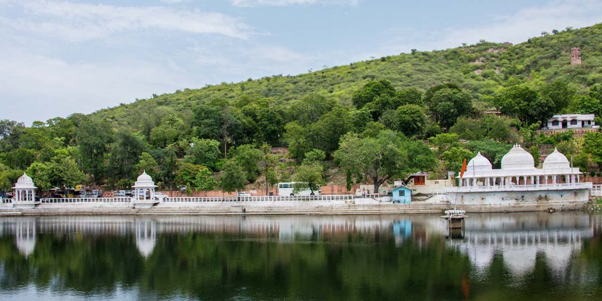
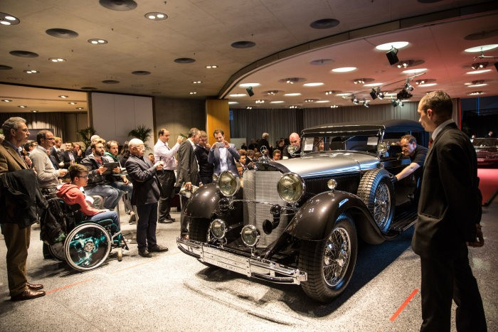

Lake Pichola

Doodh Talai Musicial Garden

City Palace

The Vintage and Classic Car Museum
<
>
Lake Pacholi
The Lake Pichola is an artificial lake located in the heart of Udaipur, Rajasthan. The oldest and one of the largest lakes of the city, the Lake Pichola observes lakhs of tourists because of its tranquillity and beauty. Flanked by lofty hills, heritage buildings and bathing ghats, it is a dream come true for peace and nature lovers. A visit to the Lake Pichola is incomplete without a boat ride, especially in the dawn. During evenings, it seems the entire place has been dipped in gold as you can see the heritage buildings and the pristine water turning golden with the sun's reflection. The enthralling views will take you to a different world of stillness and will also bring out your romantic side.
Built by Pichhu Banjara during the ruling period of Maharana Lakha in 1362 AD, the Pichola lake is 3 miles in length, 2 miles in width and has a depth of 30 feet. Maharana Udai Singh, enchanted by the charm of the lake enlarged it and also constructed a dam on the shores of this lake. The lush green hills in the backdrop with many royal palaces along its banks is a cherry on the cake. The beautiful City Palace of Udaipur adorns the eastern banks while the Mohan Mandir is situated in the north-east corner. The renowned Lake Palace is perfectly perched in the middle, and there is the Jag Mandir on Jag Island.
Eklingji Temple
Eklingji Temple is one of the most popular temples of Rajasthan and is sited at a distance of 22 km to the north of Udaipur. Eklingji Temple is dedicated to the Lord Shiva of the Hindu religion and its brilliant architecture drives several tourists here every year. This double-storied temple looks magnificent with its pyramidal style of roof and uniquely carved tower. The outer walls of the temple are stretched with steps that lower touching the serene waters.
Established in 734 A.D. by Bappa Rawal, Eklingji is purported to have been the ruling idol of Mewar rulers. On entering this hall, you would see a beautiful silver image of Nandi and inside the temple, there are two other images of Nandi carved in black stone and brass respectively. This temple is filled with an enthralling fragrance and is known for a striking four-faced idol of Eklingji (Lord Shiva) that is made out of black marble. Its height ranges around 50 feet and its four faces depict four forms of Lord Shiva. The Shivlinga garlanded by a silver snake is a major tourist attraction.
Jagdish Temple
Dedicated to the preserver of the universe, Lord Vishnu; the Jagdish Temple is a grand and majestic structure that stands in the City Palace Complex of the breathtaking city of Udaipur in Rajasthan. Jagdish Temple is dedicated to Lord Vishnu, also known as Lord Laxmi Narayan and is reputed for being the most significant temple in the entire city of Udaipur. In fact, the gateway to this grand temple can be seen from the Bara Pol of the City Palace. Beautiful carvings, numerous appealing statues and an atmosphere of serenity make this place of worship an ideal choice for seekers of solace and faith.
The main shrine houses the striking four-armed statue of Lord Vishnu, which is carved out of a single piece of black stone. The main shrine of Lord Jagdish is centrally located, encircled by four smaller shrines. These shrines are dedicated to Lord Ganesha, the Sun God, Goddess Shakti and Lord Shiva respectively. The atmosphere inside the shrine is enveloped with utter calmness and serenity and is an experience that you definitely should not miss.
Doodh Talai Musical Garden
Doodh Talai Musical garden is a rock and fountain garden which is a great place to enjoy the sunset and one can see the wide expanse of the city. Also, there is an Areal tramway (cable car) connecting a garden of Doodh Talai and the Karni mata Temple.
City Palace
Built on the banks of Lake Pichola, the City Palace in Udaipur is considered to be the largest royal complex in Rajasthan. The magnificent palace was built in the year 1559 by Maharana Uday Singh and served as the main seat of power, where the Maharanas lived and administered the kingdom from. Subsequently, the palace was made even more splendid by his successors, who added a number of structures to it. The Palace now has an assortment of Mahals, courtyards, pavilions, corridors, terraces, rooms and hanging gardens. There is a museum here as well that showcases some of the finest elements of Rajput arts and culture - from colourful paintings to the typical architecture found in Rajasthani palaces.
Nestled in the bosom of the Aravallis, the granite and marble edifice of the City Palace stands in contrast to its quaint natural surroundings. The intricate architecture of the regal palace is a subtle mix of medieval, European as well as Chinese influences and is embellished with numerous domes, arches and towers. The City Palace itself lies on a bed of lush green garden and is quite an imposing sight to behold. The regal beauty of this attraction has quite a few fans in the film industry as well, and several movies such as 'Guide' and 'Octopussy' have been shot here. A gentle amalgam of architectural genius and rich heritage, the City Palace of Udaipur is a wonderful trip down the pages of history.
The Vintage and Classic Car Museum
The Vintage and Classic Car Museum has around 20 antique cars, including 4 Rolls-Royce's, 2 Cadillacs, one MG-TC convertible, one Ford-A Convertible, one Vauxhall-12 and several other exhibits like solar powered rikshaws and many more.[4]
The Vintage and Classic Car Museum is located on the Gulab Bagh Road, just opposite to the main entrance to the Gulab Bagh and Zoo. It is just 1.5 km from Udaipur City railway station and 1 km from Udaipur City Bus Depot. Visitors can reach here by personal vehicle, or can avail taxi or local richshaw to reach here. There is an entrance charge (per-person basis) to visit this museum.
Saheliyon Ki Bari
Saheliyon Ki Bari is a majestic garden in the city of Udaipur, Rajasthan, India. It is also known as the Garden or the Courtyard of Maidens. As the name suggests, it was made for the maidens who accompanied the Princess after her marriage to Maharana Sangram Singh. The mesmerizing Saheliyon Ki Bari is located on the banks of the Fateh Sagar Lake in Udaipur. It has beautifully landscaped lush green lawns, canopied walking lanes and magnificent fountains. Most visitors think Saheliyon ki Bari is one of the best places in Udaipur to relax and rejuvenate with friends, family or even alone. The history, the traditional architecture and the regal vibe attract tourists from all over the world.
Saheliyon ki Bari is an 18th-century monument which is considered of immense historical importance in India. It is beautifully landscaped with tall trees, lush green shrubbery and flower beds.
Nehru Garden
Since times immemorial, Udaipur has been home to the Royal figures of Rajasthan. The Rajasthan Royalty have to their credit some of the most majestic palaces and forts that have ever been built in the whole world. Udaipur is also famous for its beautiful lakes and is rightly called the 'Venice of the East'. Located in the heart of the Aravalli hills, this city beckons a lot of tourists. Among the various tourist attractions, Nehru Garden in Udaipur is well known for its beauty and the splendor of the blossoms. This garden is one of the most visited sites among the Lakes and Gardens in Rajasthan. It is a great place to unwind after the busy sight seeing tour of the city.